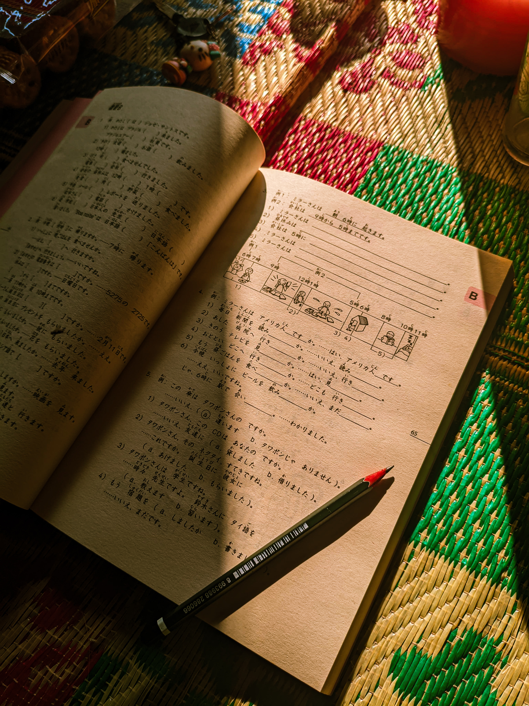
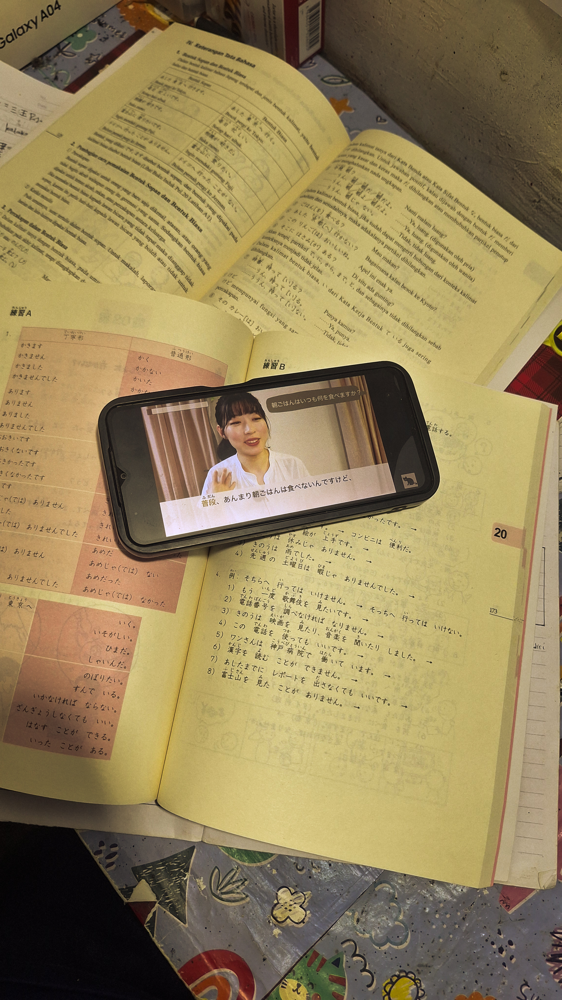

Apa yang dimaksud tata bahasa?
aturan dan struktur yang dipakai untuk menyusun kata-kata menjadi kalimat yang bermakna dalam bahasa Jepang...
↑ 41
↳ 87 balasan
Forum komunitas belajar bahasa jepang untuk daerah Belitang dan sekitarnya, disini kita belajar bareng, sharing dan bersama sama mewujudkan mimpi ke Jepang, Aminn.
aturan dan struktur yang dipakai untuk menyusun kata-kata menjadi kalimat yang bermakna dalam bahasa Jepang...
Kanji adalah aksara logogram dalam sistem penulisan bahasa Jepang yang diadopsi dari karakter Tiongkok...
Choukai berarti kemampuan memahami percakapan, ceramah, atau diskusi lisan dalam bahasa Jepang. Peserta tes harus mendengarkan audio lalu menjawab pertanyaan sesuai situasi yang didengar....
Hiragana adalah salah satu dari tiga sistem penulisan utama dalam bahasa Jepang yang berfungsi sebagai huruf fonetik untuk mewakili bunyi atau suku kata...
Katakana adalah salah satu daripada tiga cara penulisan bahasa Jepang. Katakana biasanya digunakan untuk menulis kata-kata yang berasal dari bahasa asing yang sudah diserap ke dalam bahasa Jepang (外来語/gairaigo) selain itu juga digunakan untuk menuliskan onomatope dan kata-kata asli bahasa Jepang, hal ini hanya bersifat penegasan saja...
Partikel bahasa Jepang (joshi) adalah kata bantu kecil yang diletakkan di belakang kata benda, kata kerja, atau kata sifat untuk menunjukkan fungsi kata tersebut dalam kalimat...
Kaiwa adalah istilah dalam bahasa Jepang yang berarti percakapan, dialog, atau obrolan lisan antara dua orang atau lebih...


Penjelasan singkat padat, nggak jelas, sorry guys, next bakal buat videonya.
"Jatuh tujuh kali, bangun delapan kali." Peribahasa Jepang tentang ketangguhan — dalam belajar bahasa, mengingat bahwa lupa satu kanji 7 kali bukan kegagalan, itu metodenya.
"Sekali bertemu, sekali jumpa." Setiap pertemuan terjadi satu kali dan gak akan pernah terulang dalam bentuk yang sama. Minum tehnya. Jawab pertanyaannya. Jangan skip meetup-nya.
"Tiga tahun di atas batu." Batu terdingin pun jadi hangat kalau kamu duduk di atasnya cukup lama. Kesabaran sebagai latihan harian — diterapkan di sini ke partikel tata bahasa.